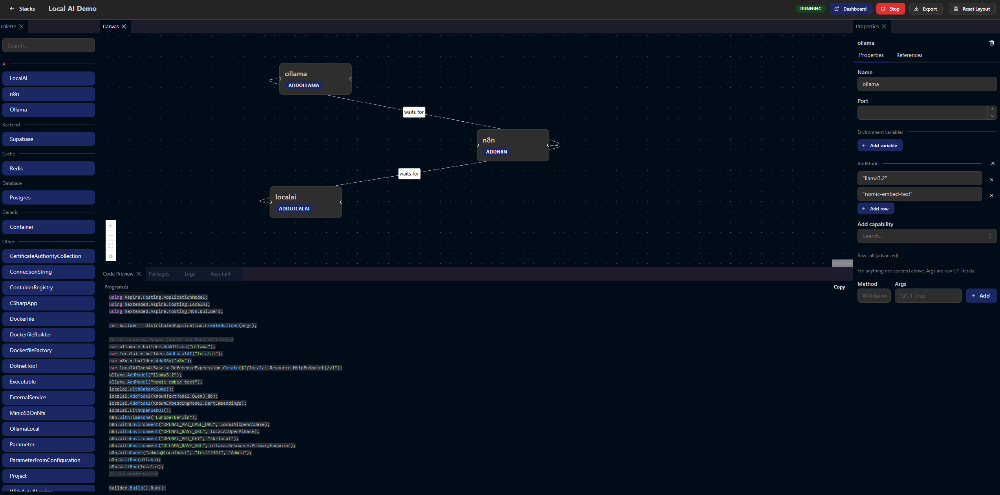
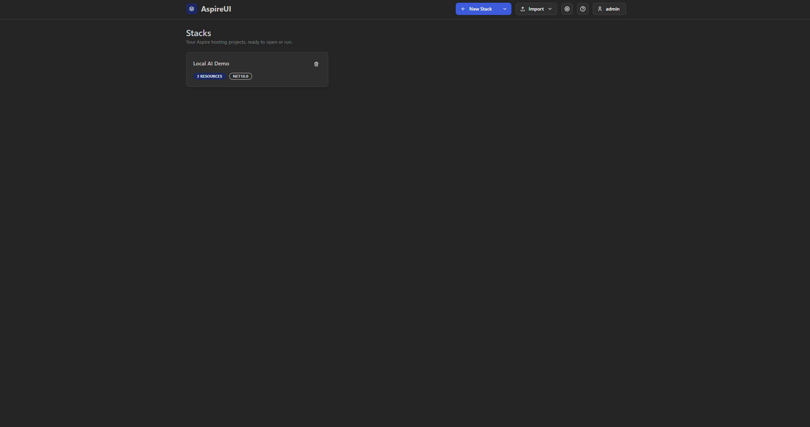
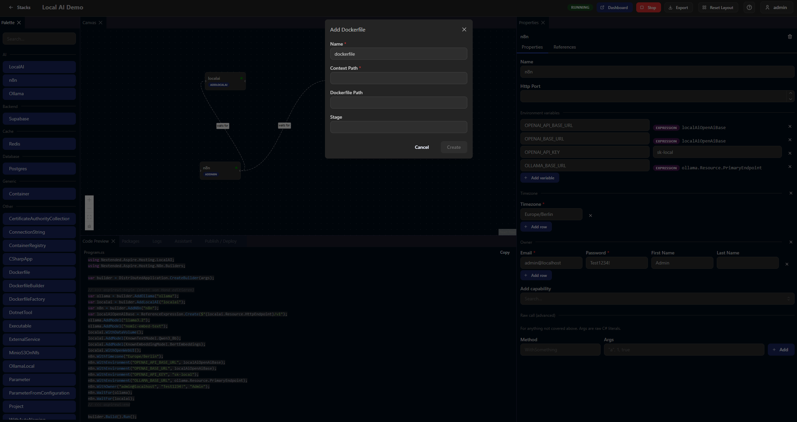
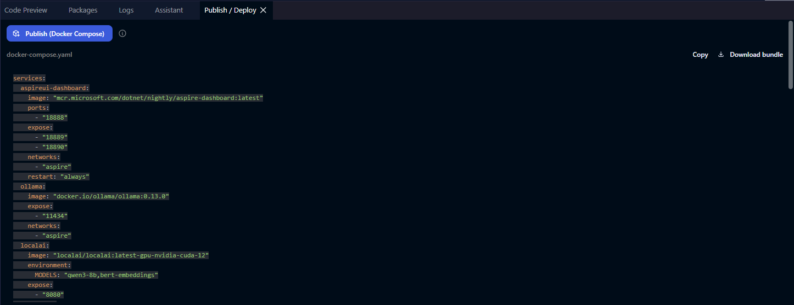

Build your Aspire stack by dragging, not typing.
AspireUI is a visual canvas for .NET Aspire AppHost projects. Drag out resources, wire up references, tweak properties in a grid, and watch the generated C# update live — then run the stack and jump straight into the Aspire dashboard.

The visual companion to aspire.love
aspire.love frees your Lovable project into a .NET Aspire solution. AspireUI is where you compose Aspire stacks visually — same ecosystem, no hand-written AppHost required.
Everything, on one canvas
Visual canvas
Drag resources onto the canvas and wire references between them. No boilerplate, no blank Program.cs to stare at.
Reflection-driven catalog
The "add resource" dialog is built from an intelligent capability catalog — new Aspire integrations show up automatically.
Live C# preview
The generated Program.cs stays in sync with the canvas, so you always see exactly the code you'll run.
Run & dashboard
Start and stop a stack from the UI, watch the run logs, and jump straight into the .NET Aspire dashboard.
Publish to Docker Compose
Publish a stack via aspire publish: view the generated docker-compose.yaml, download the bundle, or deploy it locally.
Import what you have
Bring an existing AppHost in from .cs, .csproj or a .zip — or start from a demo template.
Built-in AI assistant
Describe what you want and let the assistant build or modify the stack for you (bring your own OpenAI-compatible endpoint).
Dockable workspace
Palette, canvas, properties, preview and logs are all dockable panels — arrange the workspace the way you like.
See it in action



Run it yourself
Open source (self-hosted). Run it locally with the .NET SDK, or as a container on any Docker host.
Requires the .NET SDK 10.0+ and Docker (for running stacks).
# local dev — opens http://localhost:5158
$ dotnet run --project src/AspireUI.Server
# or self-host with Docker — opens http://localhost:8080
$ docker compose up -d --build